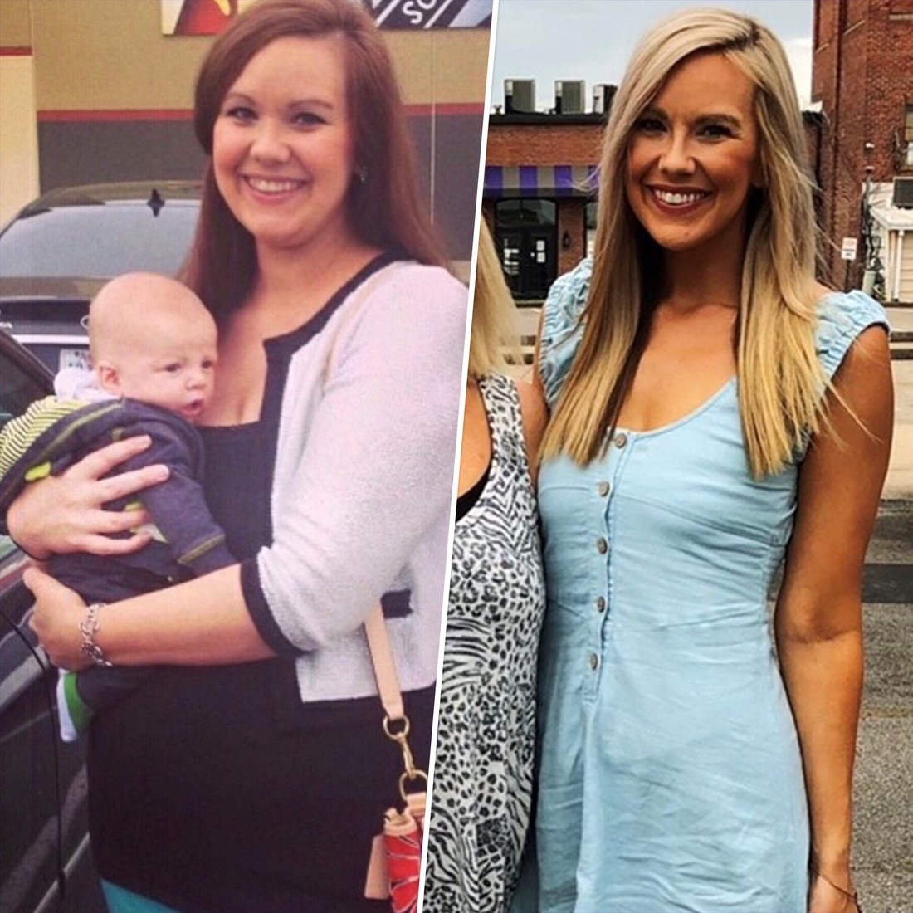

Jessica Rodriguez
Jessica está usando su blog para difundir la palabra en línea.
Malatonic Reviews - El secreto que hice para perder mi barriga en menos de 4 semanas
Malatonic Reviews - El secreto que hice para perder mi barriga en menos de 4 semanas
Hola, soy Jessica y tengo 39 años y vivo en Ciudad de México.
Me gustaría compartir una historia personal que sé que se parecerá a usted.
Cuando yo tenía 20 años, siempre fui la novia flaca que todo el mundo mandaba.
Podía comer todo lo que quería y aún así mantener mi tamaño 2.
Desafortunadamente, mi figura delgada se fue después de dar a luz a mi hijo, Peter.
¡Engordé 30 kilos mientras estaba embarazada!
Y no importa lo que hice después de eso, no pude volver a mi peso antes del embarazo.
Con el paso de los años, yo estaba más ocupada. Y tuve un segundo hijo.
Entre hacer malabares con dos hijos y un trabajo a tiempo completo, no había tiempo para comer bien, hacer ejercicio o incluso dormir. Así que me volví más pesada.
Yo no tenía más ganas de relacionarme con las personas, incluso con mi marido.
Él y yo no teníamos el mismo fuego de antes, era malo. Sólo sé que yo no era más feliz cuanto antes.
He intentado todo para perder peso...

Cuando cumplí 38 años, intenté lo que parecía ser un millón de maneras de perder peso - donde circulé por Paleo, Atkins, Keto, ayuno intermitente, ejercicios aburridos, hice cientos de flexiones y sentadillas hasta que me mareé.
¡Los resultados impactantes! (Tónico Japonés Que Derrite Mucha Grasa)
He gastado más de $400.00 en entregas de comidas, gimnasios y entrenadores personales. Abandoné carbohidratos, grasa, sal, azúcar y, finalmente, hasta comida.
Cada vez que detenía lo que estaba haciendo por unos pocos días, el peso volvía, como si mi cuerpo se estuviera vengando por intentar combatirlo.
Y cuando le pedí ayuda a mi médico, todo lo que él podía ofrecer era: "Coma menos, haga más ejercicios".
Con los constantes fracasos, finalmente cedí y me convencí de que estaba envejeciendo y ese era el cuerpo que venía con la edad.
¡El encuentro que cambió todo!
Estaba navegando por Internet una noche cuando me encontré con un post sobre cómo perder peso de manera efectiva. El post fue escrito hablando de una mujer perdió más de 30 kilos de su obstinada grasa del vientre. usando un ritual tropical simple de Tónicos Japoneses que derrite la grasa...
A pesar de toda la evidencia científica que acompaña a su publicación, todavía no lo creía.
Pero me debía al menos probar los ingredientes. Y yo estaba desesperada por probar cualquier cosa.
Secretos Tónicos Japoneses de Descubierto Recientemente...
Además, ella obviamente sabe lo que funciona para la pérdida de grasa, ya que perdió más de 30 libras por sí sola. Inmediatamente comencé a comer los ingredientes que ella listó y seguí los otros pasos que ella había compartido en el puesto.
Desde que seguí su consejo, aquí están los resultados IMPACTANTES que experimenté y por los que siempre estaré agradecida:
Mi peso cayó como una roca de 97 a 80 kilos en solo 30 días.
Desde entonces, he perdido más 20 kilos (37 kilos en total)! Todo esto fue en solo 8 semanas. Fue mucho más fácil de lo que esperaba. Podría comer toda la comida que amo y no ha recuperado ningún peso desde entonces.
Acabo de cumplir 39 años y me siento saludable, llena de energía y con el mismo aspecto que cuando tenía 20 años.
Mi piel tiene una nueva elasticidad y mi cabello está más lleno, más grueso y más brillante que nunca. La gente también comenzó a notarme de nuevo, incluso mi marido, que hoy en día me está alisando directamente... y mi autoconfianza está en un nuevo nivel!
Mi fatiga y estrés extremos también han desaparecido y mi creatividad y "entusiasmo por la vida" han vuelto con todo justo a tiempo para nuestro viaje anual en familia.
Imagínese lo que sería no tener que preocuparse nunca de complicaciones de salud mortales...
Imagínese despertando cada mañana lleno de energía y amando lo que ve en el espejo...
E imagine sentirse bien y vivir su vida sin obsesionarse con cada caloría que come...
Todo esto sabiendo que su salud está siendo protegida por uno de los más poderosos Tónicos Japoneses de curación natural ya descubiertos.
Las consecuencias habrían sido desastrosas si no me hubiera tropezado con su descubrimiento.
Yo nunca estaría viviendo la vida de mis sueños ahora y habría seguido ganando más peso.
Si usted es una mujer o incluso el hombre de una mujer que lucha contra la pérdida de peso, debe ver esta presentación gratuita y finalmente tener la solución necesaria para perder peso y tomar el control total tu vida de una vez por todas.
Realmente espero que tenga una fracción del impacto en su vida que tuvo en la mía, porque la información que está a punto de aprender ha cambiado mi vida para siempre.
Y para no presumir, mi marido no puede quitarme las manos de encima ahora. Realmente no podría sentirme más feliz.
Miro mi foto de antes tomada hace tres años. Esto me lleva a las lágrimas. Recuerdo cómo me sentía sin esperanza y derrotada.
Estoy aquí ahora más fuerte y feliz de lo que me he sentido en toda mi vida y esa es la razón principal por la que estoy sentado en mi escritorio escribiendo este post.
Su descubrimiento causó un impacto tan grande en mi vida que me arrepentiría si no compartiera esta presentación con otras personas.

Conecte-se com Jessica Rodriguez
Jessica está usando su blog para difundir la palabra en línea.
close